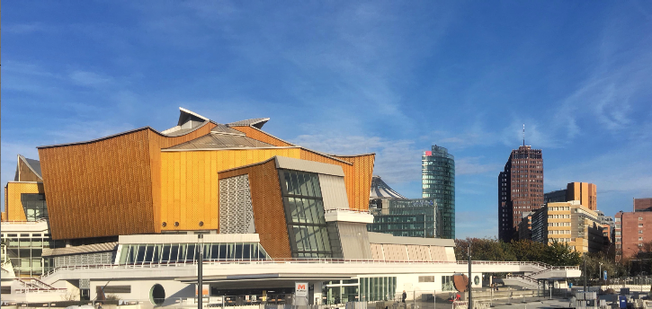
This virtual exhibition is created by Anna Bedkowska ~ Enjoy.
Among European metropolises, Berlin is probably the one with the most interesting history of the past 100 years. This results in the city being extremely diversified in terms of architecture and thus - a very convenient shooting location. In the beautifully shot Netflix’ series ‘The Queen’s Gambit’ Berlin successfully starred as Moscow, Paris, several US cities incl. Las Vegas - and even as New Mexico!
This inspired us to take a closer look at Berlin 20th century interiors, which, although in non-Corona times publicly accessible, remain mostly unnoticed, even by the locals.
Despite the unusual history and two very different political ideological approaches being represented in the city in the second half of the 20th century, examples of impressive mid-century modernist interiors could found on both sides of the Berlin Wall.
Some of the buildings presented here were designed and built from scratch, showing various faces of broadly understood modernism. Others were partly reconstructed in their historical forms, but given interiors, which quite surprisingly for East Berlin referred to bourgeois traditions - inconsistent as social realism was.
IG Metall - Metal Worker's Union Seat ~ West Berlin, 1930 / 1952
The entrance hall of IG Metall Berlin was designed by Erich Mendelsohn - the architect known both for bold expressionist experiments and mature modernist buildings. Dynamic and elegant, it is probably one of the most beautiful interiors of pre-war modernism in Berlin and also a precursory one.
The same solutions, like winding flights of stairs, huge windows and sophisticated while simple railings will be present in interior design - and considered ‘modern’ - up to 30 years later.
Volksbühne Theatre ~ East Berlin, 1954
The building of Volksbühne was damaged during the war to a large extent. During the restoration, which took place in the 50s, it was decided to go with bourgeois details like spectacular chandeliers, even though one could think, the ‘People’s Theatre’ in East Berlin would be a place where any bourgeois association should be avoided at all costs :)
Haus der Kulturen der Welt (former Congress Hall), West Berlin, 1957 / 1987
Sponsored by the US, the congress hall of West Berlin used to be seen as the symbol of the American-German alliance during the Cold War. When in 1980 its roof collapsed due to a construction failure, killing a young journalist, eastern media tended to give it a symbolic, political meaning. This sad accident is also the origin of the urban legend about the German punk band ‘Einstürzende Neubauten’ (collapsing new buildings) naming themselves after this event. In fact, the band took on this name just several weeks before.
“The pregnant oyster” or “Jimmy Carter’s smile”, as the locals call the building, was rebuilt in 1987 and is in full use today, though the interior details lost some of the original 50s charm.
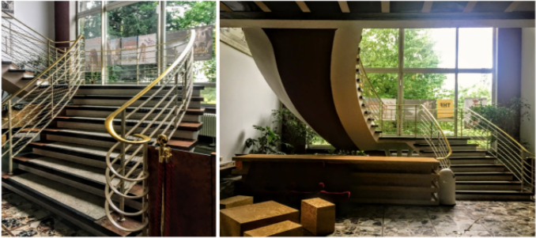
Centre Francais de Berlin ~ West Berlin, 1950
The French cultural centre - still in use! - is located in the north of the city in the former French sector of Berlin. Its almost fully glazed facade generously lets the light in and the dominant stairs with horizontal brass railings resemble the hall of IG Metall.
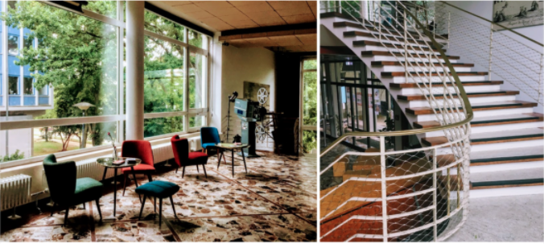
Centre Francais de Berlin (2) ~ West Berlin, 1950
The building and its furnishing are very well preserved, giving a good idea also about some less spectacular interior elements of the 50s, such as radiators, floor tiles or the ceiling cladding.
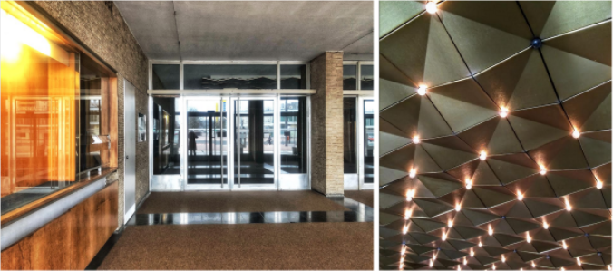
Kino International ~ East Berlin, 1963
Kino International is located in the most representative avenue of East Berlin (former Stalin Allee!) and used to be its flagship cinema. The projection hall had a special row of seats - the 8th one! - reserved for members of the communist party, with the optimal view at the screen and extra leg freedom. After premiers, celebrations continued in a party room, today known as ‘Honecker’s lounge’. In the cellars, an anecdote says, there used to be a small atom bunker - for the high communist officials.
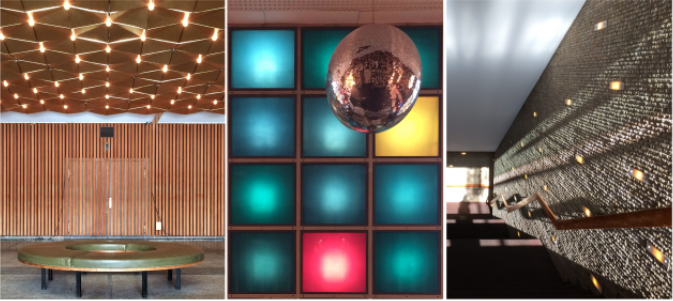
Kino International (2) ~ East Berlin, 1963
Although the building as such is pretty massive, it’s surprisingly well proportioned, light and classy inside. There is a number of creative aesthetic solutions applied in the interior design, which are still well preserved, like a variety of wall, ceiling and floor claddings. Also the original lamps, benches and chairs are worth the attention.
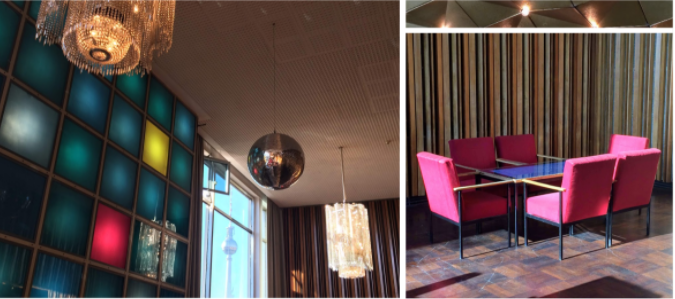
Kino International (3) ~ East Berlin, 1963
If you take a closer look at the sad and boring hotel restaurant, where Beth Harmon is having her breakfast when in Moscow, you’ll recognize the accordingly styled bar area of Kino International! Even though the wooden panelling and the Czekoslovakian glass chandeliers dominate the space, in reality it is very cheerful - and the famous Berlin TV tower can be seen through its huge windows.
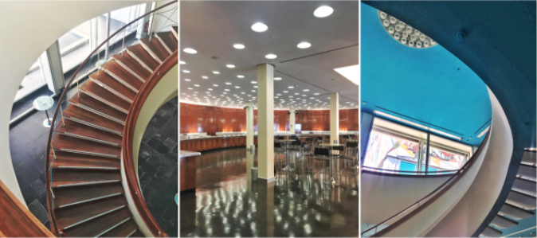
BCC - former Kongresshalle ~ East Berlin, 1964
The congress hall of East Berlin was built as part of a complex housing an administrative center for teachers. It is a very well proportioned square pavilion, literally built of steel and glass, with a round auditorium crowned by a dome.
BCC - former Kongresshalle (2) ~ East Berlin, 1964
The consistent game of colors and shapes, care for details and mostly a truly great design, make BCC one of the most beautiful mid century modern interiors in Berlin.
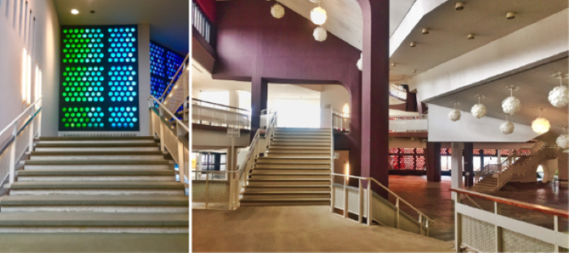
Berlin Philharmonie ~ West Berlin, 1963
Berlin Philharmonie is probably the most famous project by Hans Scharoun and one of Berlin’s architectural icons. The foyer is dynamic, multi-facetted, mixing various materials and combining rough elements with some delicate, sensual ones.
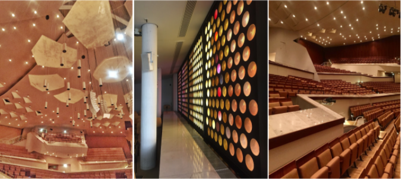
Berlin Philharmonie (2) ~ East Berlin, 1963
The building houses two concert halls, both of which are asymmetrical and irregular. The seats are arranged in a way, Sharoun himself compared to emerging vineyards. Unlike the foyer, the auditoriums are consistently kept in warm, honeyish colours.
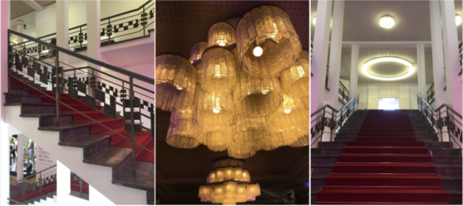
Kronprinzenpalais ~ East Berlin, 1970
Kronprinzenpalais is an example of a post-war reconstruction, where the outside imitates the original but the interior is kept contemporary - in this case it is an expression of nostalgia for Viennese art nouveau and art deco, again - quite against the official ideology.
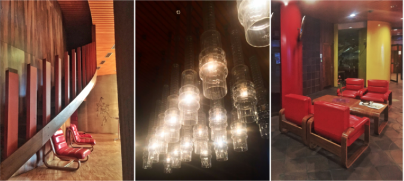
Czech Embassy ~ East Berlin, 1978
The Czech Embassy is one of the very few examples of brutalist architecturein Berlin.
It was designed by the famous couple of Czech architects (Věra & Vladimir Machonin ) and its unique status is very much cherished - the Czech Cultural Centre hosts numerous events on 20th century architecture.
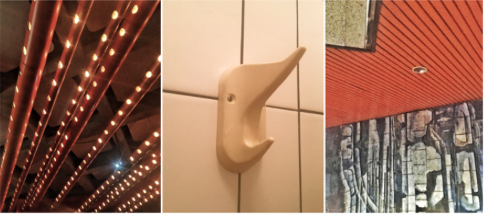
Czech Embassy (2) ~ East Berlin, 1978
The building is still in a good shape and serves its original purpose - not only the lighting of the auditorium, mosaics and furniture, but even plastic “elephant” hooks in the bathroom survived till our times.
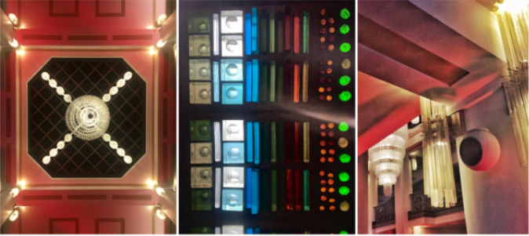
Friedrichstadtpalast ~ East Berlin, 1984
Friedrichstadtpalast is a building that could well have been built somewhere and somewhen else than East Berlin in the 80s. With its stained glass windows, characteristic chandeliers and metal work, it actually reinterprets art nouveau and art deco, and can be seen as one of the very few examples of East Berlin’s postmodernism.
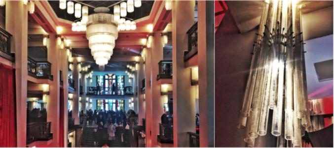
Friedrichstadtpalast (2) ~ East Berlin, 1963
The characteristic, somewhat exotic interiors of Friedrichstadtpalast also “starred” in Netflix’ ‘The Queen’s Gambit’! It was the luxurious hotel in New Mexico, where one of the chess tournaments took place - and everyone took it for credible 60s :)
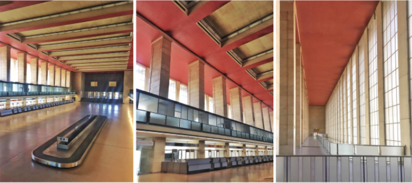
Tempelhof Airport
Tempelhof Airport is maybe not a flagship example of ‘modern’ interior design - still, with airports being continuously modernized, it is hard to find one which got so stuck in the 20th century that it was turned into a museum :)